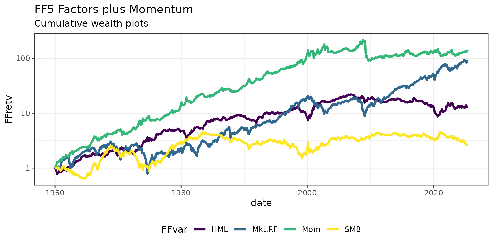

library(FFdownload)
library(tidyverse)
outd <- paste0("data/",format(Sys.time(), "%F_%H-%M"))
outfile <- paste0(outd,"FFData_xts.RData")For a detailed how-to on checking the available data sets, as well as
downloading and processing the data in separate steps, please check the
vignette("FFD-xts-how-to"). In the following we download
and process the selected files all in one step. Note, that here we
purposefully set the “format” to tibble.
inputlist <- c("F-F_Research_Data_Factors_CSV","F-F_Momentum_Factor_CSV")
FFdownload(exclude_daily=TRUE, tempd=outd, download=TRUE, download_only=FALSE, inputlist=inputlist, output_file = outfile, format = "tibble")
#> Step 1: getting list of all the csv-zip-files!
#> Step 2: Downloading 2 zip-files
#> Step 3: Start processing 2 csv-files
#> | | | 0% | |=================================== | 50% | |======================================================================| 100%
#> Be aware that as of version 1.0.6 the saved object is named FFdata rather than FFdownload to not be confused with the corresponding command!Now, we load the file and check the structure of the created list (after loading into the current workspace).
load(outfile)
ls.str(FFdata)
#> x_F-F_Momentum_Factor : List of 3
#> $ annual :List of 1
#> $ monthly:List of 1
#> $ daily : Named list()
#> x_F-F_Research_Data_Factors : List of 3
#> $ annual :List of 1
#> $ monthly:List of 1
#> $ daily : Named list()To make sure, we have actually created a list of tibbles, we check:
str(FFdata$`x_F-F_Research_Data_Factors`$monthly$Temp2)
#> tibble [1,194 × 5] (S3: tbl_df/tbl/data.frame)
#> $ date : 'yearmon' num [1:1194] Jul 1926 Aug 1926 Sep 1926 Oct 1926 ...
#> $ Mkt.RF: num [1:1194] 2.89 2.64 0.38 -3.27 2.54 2.62 -0.05 4.17 0.14 0.47 ...
#> $ SMB : num [1:1194] -2.55 -1.14 -1.36 -0.14 -0.11 -0.07 -0.32 0.07 -1.77 0.39 ...
#> $ HML : num [1:1194] -2.39 3.81 0.05 0.82 -0.61 0.06 4.58 2.72 -2.38 0.65 ...
#> $ RF : num [1:1194] 0.22 0.25 0.23 0.32 0.31 0.28 0.25 0.26 0.3 0.25 ...In a next step we merge the two data sets. I believe there is an efficient way to join the data automatically, if you know it please email me!
FFfour <- FFdata$`x_F-F_Research_Data_Factors`$monthly$Temp2 %>%
left_join(FFdata$`x_F-F_Momentum_Factor`$monthly$Temp2 ,by="date")
FFfour %>% head()
#> # A tibble: 6 × 6
#> date Mkt.RF SMB HML RF Mom
#> <yearmon> <dbl> <dbl> <dbl> <dbl> <dbl>
#> 1 Jul 1926 2.89 -2.55 -2.39 0.22 NA
#> 2 Aug 1926 2.64 -1.14 3.81 0.25 NA
#> 3 Sep 1926 0.38 -1.36 0.05 0.23 NA
#> 4 Oct 1926 -3.27 -0.14 0.82 0.32 NA
#> 5 Nov 1926 2.54 -0.11 -0.61 0.31 NA
#> 6 Dec 1926 2.62 -0.07 0.06 0.28 NA- Finally we plot wealth indices for 6 of these factors. For this, we
first
pivot_longer()to create a tidy data.frame, before wefilter()the data to start in 1960 and delete the risk-free rate. Next we calculate a wealth index and plot usingggplot(). Be aware, that the y-axis is set to a log-scale usingscale_y_log10().
FFfour %>%
pivot_longer(Mkt.RF:Mom,names_to="FFVar",values_to="FFret") %>%
mutate(FFret=FFret/100,date=as.Date(date)) %>% # divide returns by 100
filter(date>="1960-01-01",!FFVar=="RF") %>% group_by(FFVar) %>%
arrange(FFVar,date) %>%
mutate(FFret=ifelse(date=="1960-01-01",1,FFret),FFretv=cumprod(1+FFret)-1) %>%
ggplot(aes(x=date,y=FFretv,col=FFVar,type=FFVar)) + geom_line(lwd=1.2) + scale_y_log10() +
labs(title="FF5 Factors plus Momentum", subtitle="Cumulative wealth plots",ylab="cum. returns") +
scale_colour_viridis_d("FFvar") +
theme_bw() + theme(legend.position="bottom")
#> Ignoring unknown labels:
#> • ylab : "cum. returns"